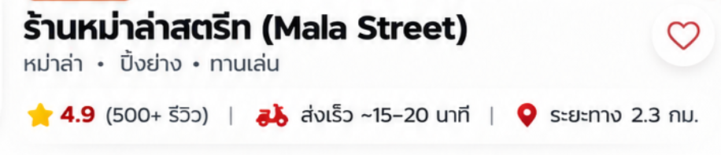

เปรียบเทียบฟอนต์ Mala Street
Regular 400 + Bold 700ภาพอ้างอิงจากผู้ใช้

ทดลองเลือกฟอนต์: เริ่มต้นที่ Prompt (คาดว่าใกล้ที่สุด)
ร้านหม่าล่าสตรีท (Mala Street)
หม่าล่า • ปิ้งย่าง • ทานเล่น
น้ำหนักฟอนต์
Regular (400) — ตัวธรรมดา
หม่าล่า • ปิ้งย่าง • ทานเล่น
ส่งเร็ว ~15–20 นาที
Bold (700) — ตัวหนา
ร้านหม่าล่าสตรีท
Mala Street • 4.9 ★
ภาพต้นฉบับเป็นภาพ raster จึงไม่สามารถระบุฟอนต์เดิมได้แบบยืนยัน 100% • ตัวอย่างนี้ต้องต่ออินเทอร์เน็ตเพื่อโหลด Google Fonts • ดาวน์โหลด Prompt ตัวจริงจาก Google Fonts